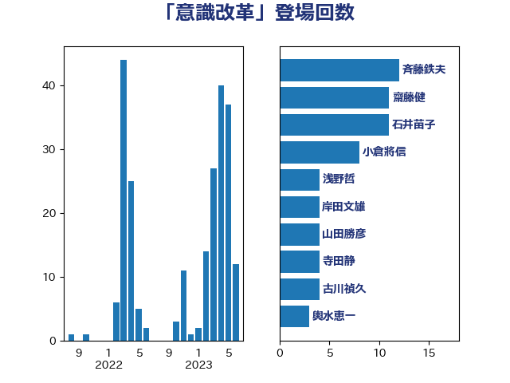

単語「意識改革」

| 斉藤鉄夫 | 公明党 | 12 回 |
| 齋藤健 | 自由民主党 | 11 回 |
| 石井苗子 | 日本維新の会 | 11 回 |
| 小倉將信 | 自由民主党 | 8 回 |
| 浅野哲 | 国民民主党 | 4 回 |
| 岸田文雄 | 自由民主党 | 4 回 |
| 山田勝彦 | 立憲民主党 | 4 回 |
| 寺田静 | 無所属 | 4 回 |
| 古川禎久 | 自由民主党 | 4 回 |
| 輿水恵一 | 公明党 | 3 回 |
| 西村明宏 | 自由民主党 | 3 回 |
| 西村康稔 | 自由民主党 | 3 回 |
| 礒崎哲史 | 国民民主党 | 3 回 |
| 石原宏高 | 自由民主党 | 3 回 |
| 矢倉克夫 | 公明党 | 3 回 |
| 宮本岳志 | 日本共産党 | 3 回 |
| 井上哲士 | 日本共産党 | 3 回 |
| 阿部司 | 日本維新の会 | 2 回 |
| 鈴木宗男 | 日本維新の会 | 2 回 |
| 金子恵美 | 立憲民主党 | 2 回 |
| 若松謙維 | 公明党 | 2 回 |
| 神谷裕 | 立憲民主党 | 2 回 |
| 田村智子 | 日本共産党 | 2 回 |
| 森屋隆 | 立憲民主党 | 2 回 |
| 村田享子 | 立憲民主党 | 2 回 |
| 平木大作 | 公明党 | 2 回 |
| 五十嵐清 | 自由民主党 | 2 回 |
| 高橋光男 | 公明党 | 1 回 |
| 高木陽介 | 公明党 | 1 回 |
| 高木かおり | 日本維新の会 | 1 回 |
| 音喜多駿 | 日本維新の会 | 1 回 |
| 階猛 | 立憲民主党 | 1 回 |
| 長峯誠 | 自由民主党 | 1 回 |
| 長友慎治 | 国民民主党 | 1 回 |
| 鈴木義弘 | 国民民主党 | 1 回 |
| 鈴木敦 | 国民民主党 | 1 回 |
| 鈴木俊一 | 自由民主党 | 1 回 |
| 金村龍那 | 日本維新の会 | 1 回 |
| 金子恭之 | 自由民主党 | 1 回 |
| 野田聖子 | 自由民主党 | 1 回 |
| 里見隆治 | 公明党 | 1 回 |
| 赤池誠章 | 自由民主党 | 1 回 |
| 赤嶺政賢 | 日本共産党 | 1 回 |
| 荒井優 | 立憲民主党 | 1 回 |
| 竹詰仁 | 国民民主党 | 1 回 |
| 竹内譲 | 公明党 | 1 回 |
| 竹内真二 | 公明党 | 1 回 |
| 福島伸享 | 無所属 | 1 回 |
| 石川博崇 | 公明党 | 1 回 |
| 盛山正仁 | 自由民主党 | 1 回 |
| 漆間譲司 | 日本維新の会 | 1 回 |
| 浜野喜史 | 国民民主党 | 1 回 |
| 浜田靖一 | 自由民主党 | 1 回 |
| 河西宏一 | 公明党 | 1 回 |
| 池畑浩太朗 | 日本維新の会 | 1 回 |
| 横山信一 | 公明党 | 1 回 |
| 森本真治 | 立憲民主党 | 1 回 |
| 柴愼一 | 立憲民主党 | 1 回 |
| 松本剛明 | 自由民主党 | 1 回 |
| 東徹 | 日本維新の会 | 1 回 |
| 東国幹 | 自由民主党 | 1 回 |
| 後藤茂之 | 自由民主党 | 1 回 |
| 広瀬めぐみ | 自由民主党 | 1 回 |
| 平山佐知子 | 無所属 | 1 回 |
| 川合孝典 | 国民民主党 | 1 回 |
| 岸真紀子 | 立憲民主党 | 1 回 |
| 岡本あき子 | 立憲民主党 | 1 回 |
| 山本順三 | 自由民主党 | 1 回 |
| 小野田紀美 | 自由民主党 | 1 回 |
| 寺田学 | 立憲民主党 | 1 回 |
| 太栄志 | 立憲民主党 | 1 回 |
| 大島敦 | 立憲民主党 | 1 回 |
| 大口善徳 | 公明党 | 1 回 |
| 土屋品子 | 自由民主党 | 1 回 |
| 吉田統彦 | 立憲民主党 | 1 回 |
| 倉林明子 | 日本共産党 | 1 回 |
| 伴野豊 | 立憲民主党 | 1 回 |
| 伊藤岳 | 日本共産党 | 1 回 |
| 仁比聡平 | 日本共産党 | 1 回 |
| 三浦信祐 | 公明党 | 1 回 |